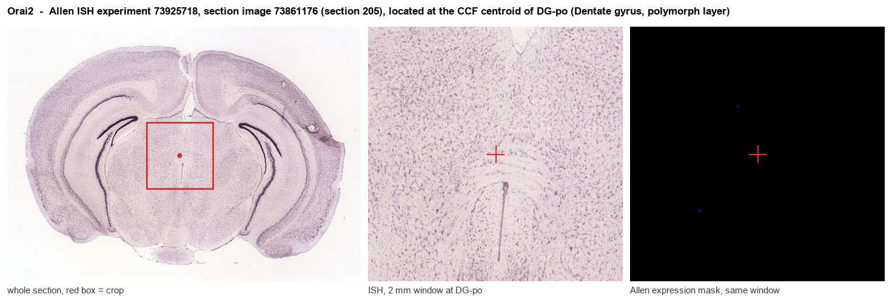
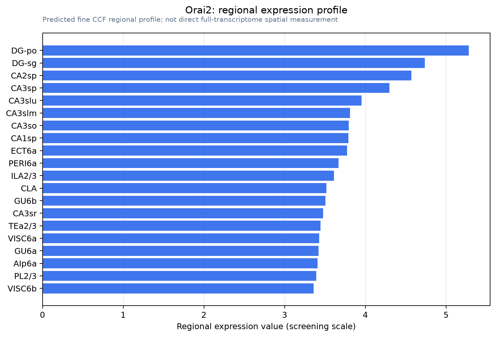

Orai2
Protein orai-2 (Transmembrane protein 142B)
Spatial tier: REGION_BIASED · Class: ION_CHANNEL · Top region: DG-po (Dentate gyrus, polymorph layer) · Positive regions: 42/554
41.4Discovery Score
40.1Targetability Score
CEvidence grade C
What this means: Orai2: fine CCF profile is region-biased toward DG-po (top regions: DG-po, DG-sg, CA2sp, CA3sp, CA3slu); this is a discovery lead, not direct proof.
Function in DG-po: evidence, prediction, innovation
- Gene function
- ORAI2 is one of three ORAI proteins forming the pore of store-operated Ca2+ release-activated Ca2+ (CRAC) channels. When ER Ca2+ stores fall, the ER sensors STIM1/STIM2 gate ORAI channels, producing store-operated Ca2+ entry (SOCE) that refills the ER. ORAI2 has lower conductance than ORAI1 and heteromerises with it to tune SOCE amplitude; it is the dominant ORAI transcript in mouse neurons.
- Region function
- The dentate hilus (DG-po) holds glutamatergic mossy cells and GABAergic interneurons that feed back onto granule cells, setting dentate excitability and supporting pattern separation (Jinde 2012).
- Published in this region
- expression only No functional study of Orai2 in DG-po. The closest findings are that SOCE tonically maintains resting ER Ca2+ in hippocampal neurons (Samtleben 2015), that these neurons hold two distinct ER Ca2+ stores whose refilling depends on store-operated entry (Chen-Engerer 2019), and that Orai2-null mice have reduced neuronal capacitative Ca2+ entry and resist ischaemic neuronal death (Stegner 2019); Allen ISH gives Orai2 its highest expression energy here (21.3-22.0).
- Predicted function
- Prediction: in fast-firing hilar mossy cells and interneurons carrying large mGluR/IP3-driven Ca2+ loads, ORAI2 supplies the tonic SOCE that refills ER stores between bursts and limits Ca2+ overload. Conditional deletion in mossy cells should blunt metabotropic Ca2+ transients, weaken mossy cell-granule cell plasticity and shift dentate excitation/inhibition, giving impaired contextual discrimination with relative resistance to excitotoxic hilar loss.
- Innovation
- ★★★★☆ 4/5 Orai2 is the dominant neuronal ORAI and is strikingly hilus-enriched, yet has never been examined in any dentate cell type.
- Tools
- Orai2 knockout mice (Stegner 2019) and Orai floxed alleles; SOCE blockers BTP2/YM-58483, Synta66, GSK-7975A; anti-ORAI2 antibodies; mossy-cell Cre drivers (Drd2-Cre, Calcrl-Cre).
- References
Direct evidence located at the region

Allen ISH experiment 73925718, section image 73861176 (section 205): the section that contains the CCF centroid of Dentate gyrus, polymorph layer according to the Allen image-to-atlas alignment (reference_to_image), with a 2 mm window around that point. Left: whole section, red box = window. Middle: ISH signal. Right: Allen's expression-mask view of the same window. open this image in the Allen viewer
Look it up yourself: Allen Mouse Brain ISH for Orai2Allen reference atlas: DG-po (structure 10704)ABC Atlas MERFISH viewer(in the ABC Atlas choose dataset MERFISH-C57BL6J-638850-CCF, colour cells by gene "Orai2" or by parcellation_substructure "DG-po")All genes confined to DG-po + 3-D brain
Direct spatial evidence
MERFISH REGION LOCATOR

Regional expression figure

Predicted WMB × fine-CCF profile; not direct full-transcriptome spatial measurement.
Spatial profile
Evidence and specificity
- Evidence status
- PREDICTED_FINE
- Direct sources
- None; predicted localization only
- Exclusive threshold
- 12 positive regions out of 554
- Spatial specificity
- 0.274
- Top-region fraction
- 0.044
- Filter status
- PASS
Interpretation limits
- Cell-type-to-region projection is imputed expression, not direct spatial measurement.
- Adult reference atlases do not establish stability across age, sex, strain, state, or disease.
- Transcript abundance does not guarantee protein abundance or genetic-tool performance.